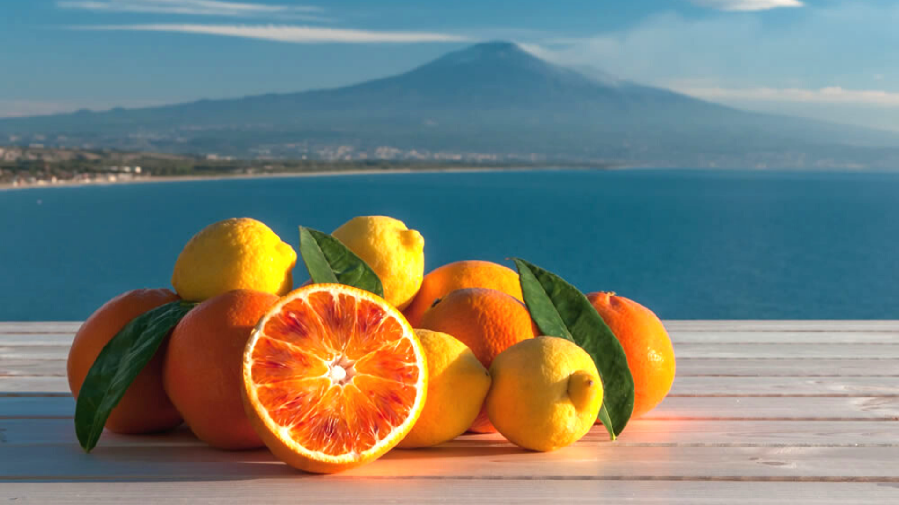

Agrumi di sicilia
Gli agrumi siciliani non temono confronti. Sono ritenuti tra i migliori al mondo e sono diventati un
simbolo stesso della nostra isola. Basta pensare ad arance, limoni,
mandarini e cedri per avere subito davanti l’immagine del paesaggio siciliano.
Nonostante non siano autoctoni, gli agrumi sono un vero e proprio motivo di vanto per la Sicilia.
